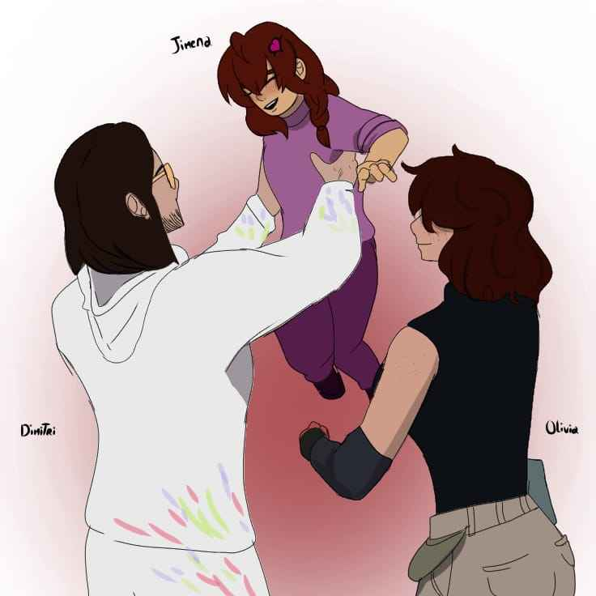

Sobre Nosotros
¡Bienvenidos a The Last Zone, un manga inspirado en el popular juego Free Fire!
Somos un grupo de apasionados fanáticos de Free Fire, unidos por un solo propósito: ¡crear un manga que capture la esencia del juego y lo lleve a nuevas alturas! Nos reunimos con otros 50 talentosos participantes para hacer realidad este proyecto, con la intención de ofrecer algo único para todos los jugadores y fanáticos del juego.
¿Por qué lo hacemos?
Queremos que más personas se diviertan leyendo nuestra historia, una aventura llena de acción, supervivencia y emoción, que mantendrá a todos enganchados episodio tras episodio. Nuestra meta es no solo brindar entretenimiento, sino también acercar a los jugadores más al universo de Free Fire, permitiéndoles vivir sus batallas favoritas de una forma completamente nueva. Creemos que este manga puede ser el puente perfecto para aquellos que aman el juego pero también disfrutan de una buena historia llena de giros, sorpresas y, por supuesto, mucha acción. Únete a nosotros y forma parte de esta emocionante travesía. ¡La última zona te espera!